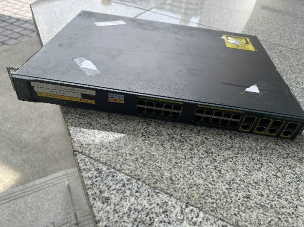
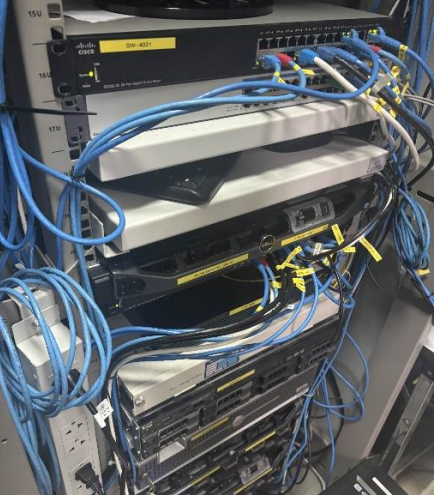
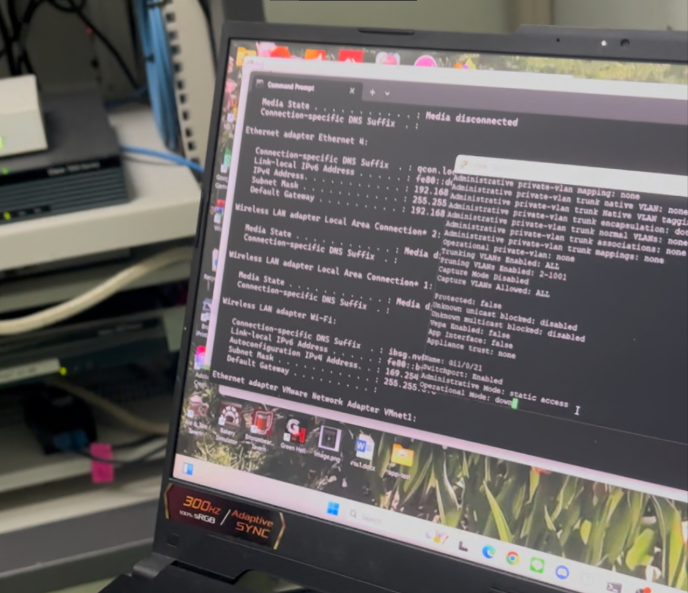
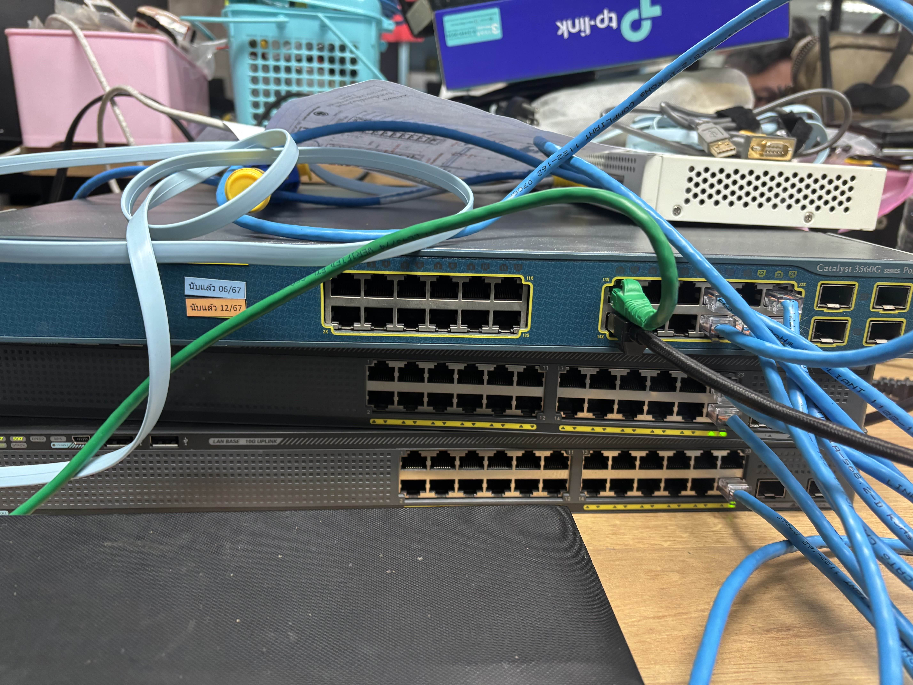

เกี่ยวกับฉัน
ผู้ลงใหลในโครงสร้างพื้นฐานเครือข่าย การแก้ไขปัญหา และความปลอดภัย
เชี่ยวชาญในการกำหนดค่าอุปกรณ์ การใช้งานโปรโตคอลการกำหนดเส้นทาง การเพิ่มประสิทธิภาพเครือข่าย และการรับรองความปลอดภัยของเครือข่าย
ประสบการณ์:
3+ เดือน
งานปัจจุบัน:
นักศึกษา
การศึกษา:
วิทยาการคอมพิวเตอร์
ประสบการณ์ออกหน้างาน

เปลี่ยนเป็น Switch L2 Cisco 2960G
Switch Dell ตัวเดิมใช้งานมานาน เกิดอาการเสีย

เปลี่ยน FIREWALL FortiGate 200D
อัพเกรดรุ่นใหม่เป็น FortiGate 120G

ติด Label บนสาย LAN ตามจำนวน Patch Panel
ติดPatch Panel ตามSwitch 8 ตัว

PM(Preventive Maintenance)
Backup Configuration ของ Switch 5 ตัว

สร้าง Lab Network เพื่อทดสอบการทำงานของอุปกรณ์และโปรโตคอลต่างๆ
ทำอุปกรณ์ทุกตัวให้สามารถสื่อสารกันได้ ด้วย PING
ติดต่อฉัน
อีเมล
natdanai.pakp@gmail.com